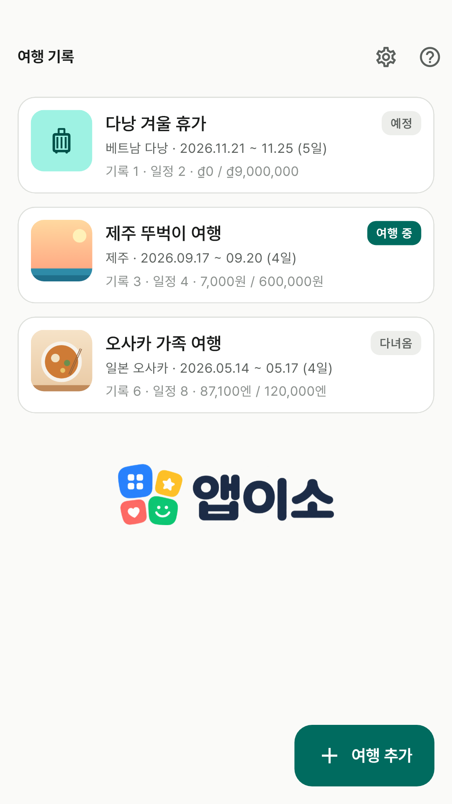
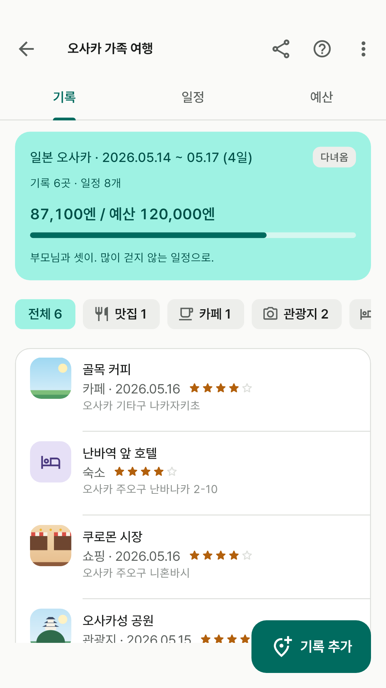
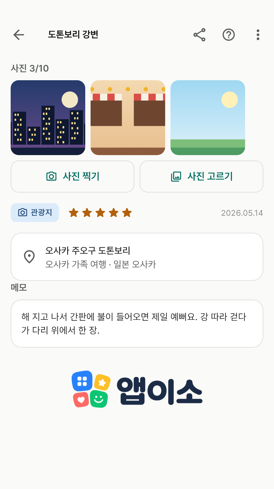
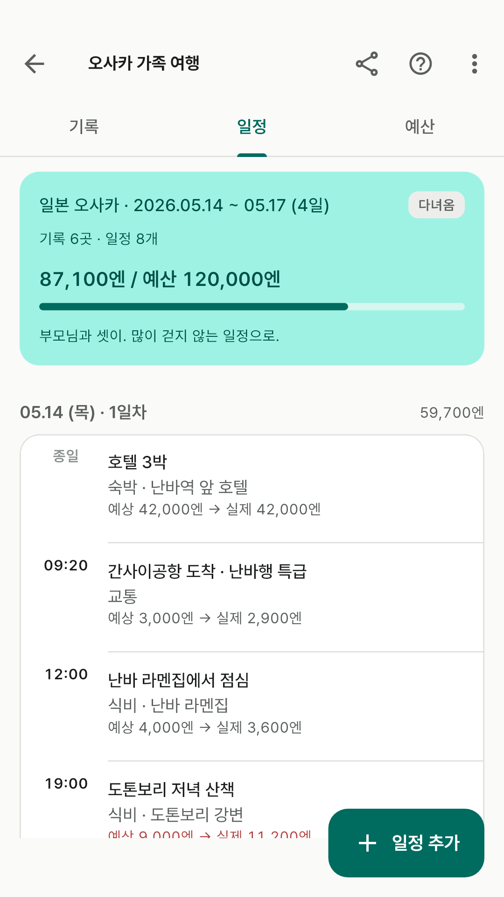
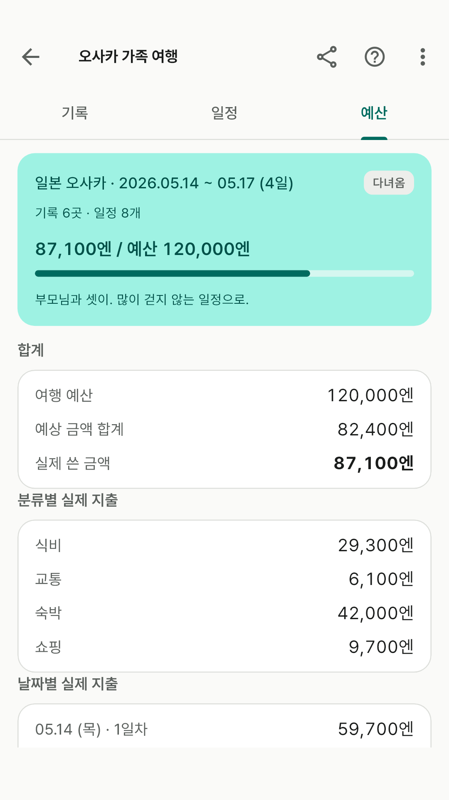
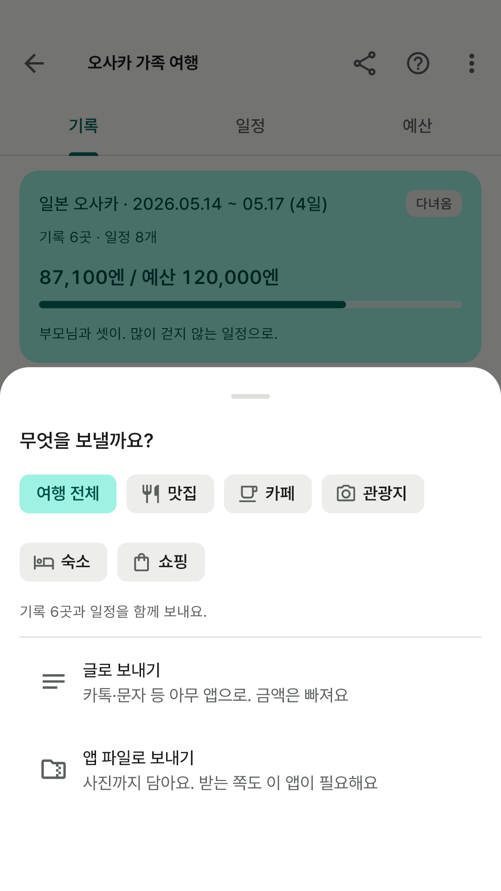
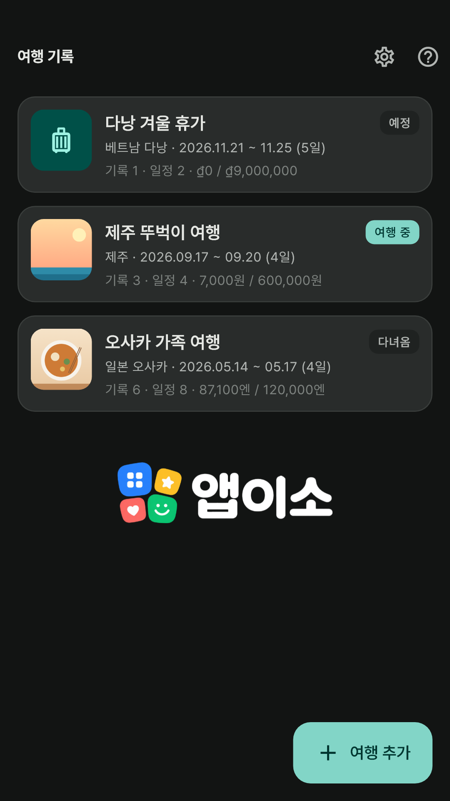

앱이소 여행 기록
여행 하나를 통째로 담아 두는 기록장
구글 플레이 공개 준비 중
출시를 준비하고 있습니다. 스토어에 공개되면 이 자리에서 바로 받을 수 있습니다.
광고 없이 완전 무료입니다. 결제도, 로그인도, 계정도 없습니다.
인터넷 권한을 아예 요청하지 않아서 비행기 모드에서도 그대로 쓸 수 있습니다.
여행지에서 데이터가 안 터질 때야말로 적을 일이 많으니까요.
이런 걸 할 수 있어요
- 여행이 하나의 단위예요 — 홈에 여행 카드가 쌓입니다. 여행지·기간과 함께
예정 · 여행 중 · 다녀옴 상태가 붙고, 대표 사진과 기록 수·일정 수·쓴 돈이 같이 보여요.
기간을 아직 안 정했으면 비워 둬도 됩니다.
- 기록 — 맛집·카페·관광지·숙소·쇼핑·체험 중에서 종류를 고르고 이름만 적으면
끝이에요. 주소·들른 날·별점·메모는 아는 만큼만. 목록 위 칩을 누르면 "맛집만", "숙소만"
걸러 볼 수 있습니다.
- 사진은 기록당 10장까지 — 바로 찍거나 여러 장을 한 번에 골라 담아요.
앱이 쓰는 건 사본이라 갤러리 원본은 손대지 않고, 사본에서는 촬영 위치 같은 정보를 떼어 냅니다.
전체 사진 라이브러리 권한을 요청하지 않고 고른 사진만 받아요.
- 일정 — 날짜·시각·할 일을 적으면 날짜별로 묶여 "05.14 (목) · 1일차"처럼
보입니다. 일정마다 분류와 예상 금액·실제 쓴 금액을 적고, 기록과 연결해 두면 어디였는지
같이 보여요. 그날 쓴 합계가 날짜 줄에 붙습니다.
- 예산 — 여행마다 통화를 하나 고르고(원·엔·달러 등 13가지) 그 단위 그대로
적어요. 환산하지 않으니 인터넷이 필요 없습니다. 예산 대비 실제 지출을 막대로 보여주고,
분류별·날짜별 합계가 따라옵니다.
- 공유 — 여행 전체로, 또는 "맛집만" 골라 보냅니다. 글로 보내면 카톡·문자 등
아무 앱으로 가고(금액은 빠져요), 앱 파일로 보내면 사진까지 담아 갑니다. 받는 쪽에서
파일을 누르면 앱이 열려요.
- 백업과 복원 — 모든 여행과 사진을 담은 파일 하나를 만들어 드라이브·메일에
보내 두고, 새 폰에서 그대로 되돌립니다.
앱 안에서는 이렇게 보여요

지금 무엇이 진행 중인지 한눈에.

맛집만, 숙소만 걸러 보기.

사진과 함께 남기는 한마디.

며칠째에 무엇을 하고 얼마를.

계획한 돈과 실제로 쓴 돈.

통째로, 또는 골라서 친구에게.

어두운 화면도 됩니다.
화면에 보이는 여행·가게 이름과 금액은 기능을 설명하기 위한 예시이고, 사진 자리에 있는 것은
그림입니다.
개인정보
이 앱은 개인정보를 수집하지 않습니다. 적어 넣은 내용과 사진은 휴대폰 안에만 저장되고
개발자에게 전송되지 않습니다. 자세한 내용은
개인정보처리방침을 확인해 주세요.
문의
버그 제보나 넣었으면 하는 기능이 있으면
appisoLabs@gmail.com 으로 알려주세요.
어떤 버전에서 생긴 일인지(앱 도움말 맨 아래에 적혀 있어요) 같이 적어주시면 도움이 됩니다.